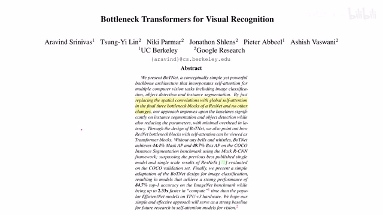
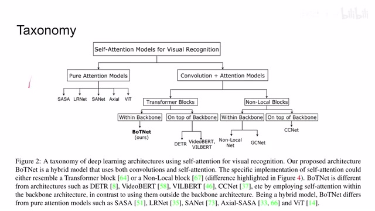
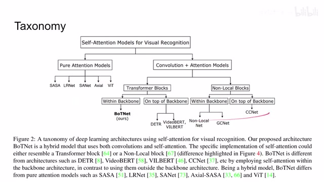
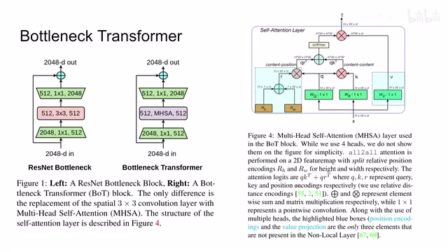
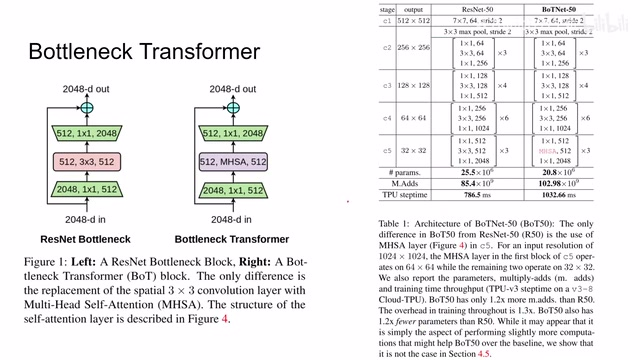
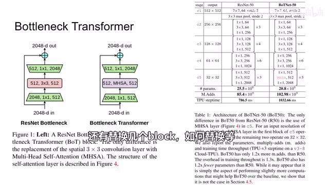
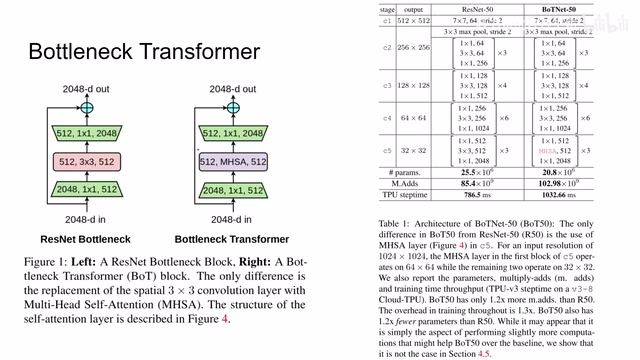
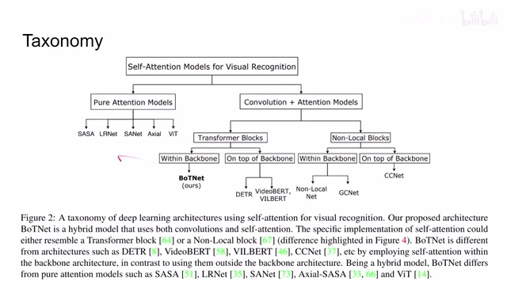

← 返回阅读库 · 原论文目录
论文讲解阅读文档 · 新模型 · v085
Bottleneck Transformers for Visual Recognition[2101.11605]
视频时长 00:02:09；讲解文字 1,086 字符；提取讲解画面 8 张。按视频原顺序阅读，每段文字保留时间戳。
文字来自整段视频的自动语音转写，按自然停顿分段，并与 PPT / 论文页面 / 演示画面对齐。未将讲解压缩为摘要；术语、数字和口述公式请结合画面及原论文核对。 阅读稿已校正规范部分明确术语误识别；原始逐字稿和每处修改记录另行保留。
讲解画面为源视频截图（640×360），不是可编辑 PPT 文件。全片按每秒 2 帧扫描内容变化，逐步展开页保留；连续动画保留代表画面。清晰度受源视频限制。
下载完整资料包 · 含离线 HTML、PDF、Word、全部 PPT 画面和字幕。
原论文与材料
Bottleneck Transformers for Visual Recognition · 下载完整 PDF（11 页）
演示音频备注
以下为整理备注，原音另附以便核对。
00:00:50–00:01:02 · 此处通道数语音转写为248，画面0004标注为2048；原音另附供核对。
按时间阅读
00:00:00–00:00:16 · 画面 001

00:00:00–00:00:16 · 画面 001大家好，今天我们来快速说明一下，bottleneck transformers for visual recognition 这篇论文最核心的工作，就是原来 resnet 里面的 bottleneck blocks 给它换成了带 self-attention 的 bottlenecks，然后取得了一个性能的提升。
00:00:16–00:00:41 · 画面 002

00:00:16–00:00:41 · 画面 002那么为什么要提这篇文章呢？因为在一开始呢，他做一个关于这个 self attention 在这个视觉识别里面的这样一个整理，那么你可以看到他根据不同的标准呢，把这些方法呢都一一进行了分类，那么本文的方法呢，因为只是把这个 resnet 的结构呢，给他替换，他的主体结构呢还是 resnet，所以呢，他是归在了这个类下面，那么如果你感兴趣了，你当然可以去看一下他们这些其他的方法。
00:00:41–00:00:44 · 画面 003

00:00:41–00:00:44 · 画面 003那么说到本文的核心的贡献我们来看到这里那这个呢是我们一个经典的这个 resnet bottleneck 它先是通过 1x1 的 convolution 呢把这个 248 个 channel 呢换成 512 个 channel 然后呢用 33 的 convolution 呢做一个变换到最后呢再给它从 512 扩回到 248 这个呢是在 resnet 的最后几个 block 里面会出现的这么一个 bottleneck 那本文呢其实就是把这个 33 的 convolution 呢给它替换成这个 multi-head self-attention
00:00:44–00:01:31 · 画面 004

00:00:44–00:01:31 · 画面 004那么它的结构呢，其实就是我们 VisionTransformer 里面的一样，可以看到呢，一个值进来，这里的这个 query key 还有 value 对吧，然后呢，加上这个 positional encoding 啊，把他们这个 attention 算出来，softmax 一加，然后和 value 一结合啊，最后就出来这么一个东西，那么看到实际的网络呢，就是在这个 c5 这个阶段对吧，把原来三个这个 resnet bottleneck 的对吧，给它替换成了这个 bottleneck transformer。
00:01:31–00:01:54 · 画面 005

00:01:31–00:01:54 · 画面 005那么具体的实验结果呢，因为有很多，这里就不再放了，非常推荐你去原文来查看，那么当然作者也做了一些非常有意思的尝试，比如说这个 Skip Connection 能不能像 SENet 一样，这里再加一些 Bottleneck 对吧，那么还是这个系列的视频呢，主要是帮助你知道有这么一篇论文，然后如果你对它具体的实验结果它做了哪些实验感兴趣，还有包括这些讨论非常感兴趣，那么你就可以在这些原文中找到答案，那么感谢您的收看，再见。
00:01:54–00:01:58 · 画面 006

00:01:54–00:01:58 · 画面 00600:01:58–00:02:02 · 画面 007

00:01:58–00:02:02 · 画面 00700:02:02–00:02:09 · 画面 008

00:02:02–00:02:09 · 画面 008转写与来源说明 · 0 个自动复核提示
保留 5 个原始语音片段，0 个片段触发自动复核提示。提示仅用于定位可能的术语、重复或识别问题，不等于已确认错误。
讲解画面为源视频截图（640×360），不是可编辑 PPT 文件。全片按每秒 2 帧扫描内容变化，逐步展开页保留；连续动画保留代表画面。清晰度受源视频限制。
原视频：paper/合集_2026-10-16_新模型/[论文速览]Bottleneck Transformers for Visual Recognition[2101.11605].mp4
SHA-256：a9c3c01472b7660bec5d82d8e77e75d93dba571a3d534341c8fc42001acec2fa
全文按视频语音与画面制作。原论文可从上方链接下载；完整资料包保留全文、原始逐字稿、字幕和校对记录。